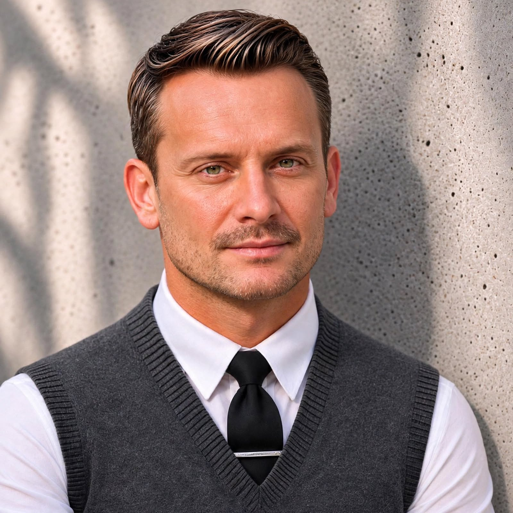
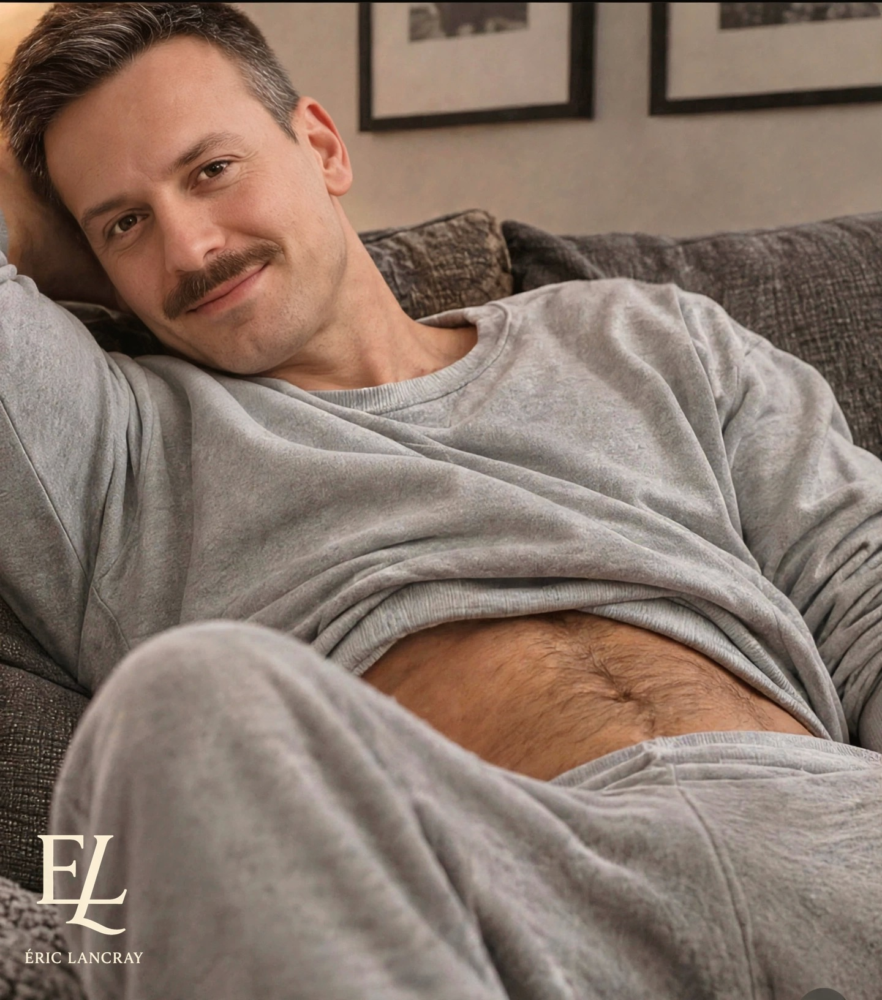

ÉRIC LANCRAY
OFFICIAL WEBSITE
MASCULINE ELEGANCE
Presence shaped by discipline.
Individuality beyond trends.
I grew up in Saint-Paul-de-Vence, on the French Riviera, with French and Italian roots.
Since childhood, movement has been a constant in my life through judo, orienteering, track and field, swimming, horseback riding, and dance.
Trained at the Centre International de Danse Rosella Hightower in Cannes, I was a professional dancer with the Opéra de Nice while also pursuing a career in modeling.
My path continued abroad, across Europe and in the United States.
Today, I work as an image consultant and occasionally model.
I continue to train with the same discipline.
My understanding of masculine elegance has grown out of these experiences.
Éric Lancray


